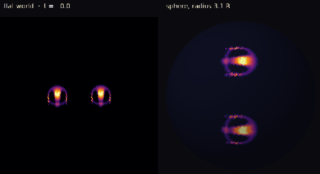
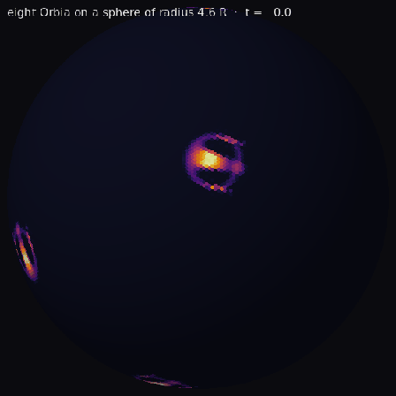
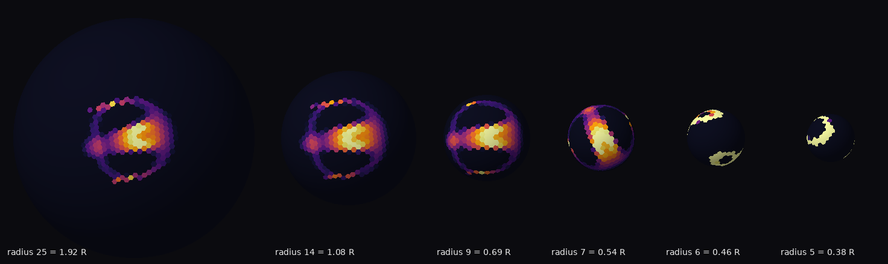
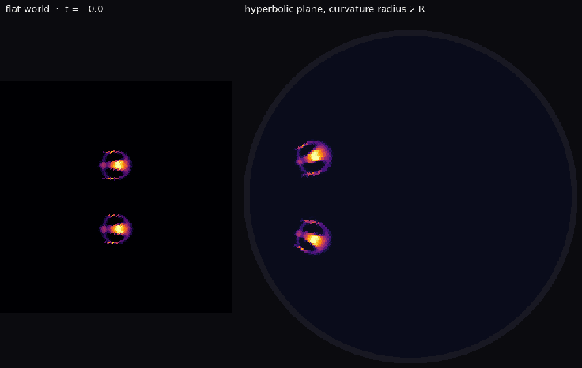
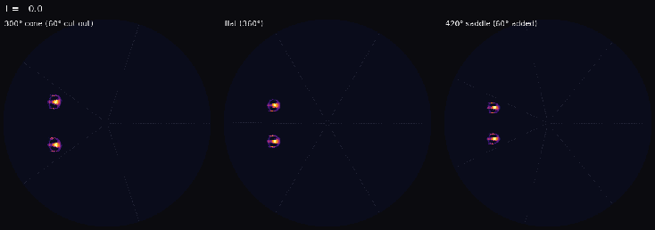
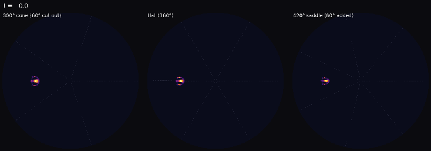
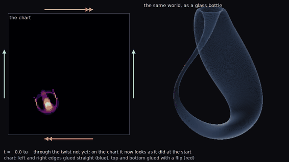
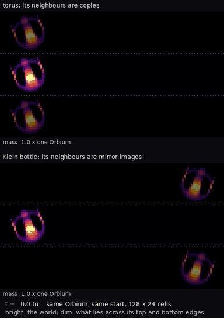
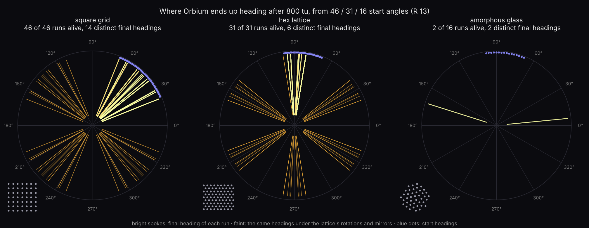

East wing · Other geometries
Orbium on strange worlds
Every other room keeps its animals on a flat, square-tiled torus. Here we moved Orbium, unchanged, onto a ball, onto the hyperbolic plane (the saddle-shaped world of Escher's Circle Limit prints), past single points of curvature, into a Klein bottle and onto a hexagonal tiling. The rule is the same everywhere: each cell looks at its neighbours within 13 cells of true distance, weighted by the same ring-shaped kernel. Only the shape of space changes.
Parallel lines meet

What you see. On the flat world the pair never comes closer. On the ball they lean together after a few time units, touch, and go on as one joined body.
What the ledger says. On a sphere there are no parallel lines: every two great circles cross. In 16 runs (four sphere sizes, four starting gaps) 14 pairs touched; on the flat world none of 4 did. What happens next varies: in 9 runs both glide on, in 3 one dies, and in 4 they fuse into one body whose mass and size match the catalogued bound pair Synorbium ignis (S101 here) C084observed. We matched mass and size only, not shape C043observed.

What you see. Collisions come quickly, because every path crosses every other path. After 80 time units two animals are left, and they keep circling the planet.
How small can a planet be?

What you see. As the planet shrinks, the animal wraps around it. On the planet of radius 7 cells it is a band reaching nearly all the way round.
What the ledger says. It still glides at full speed on a planet of radius 7 cells, about half its own kernel radius: the whole world is smaller than what one cell can see. At 6 cells and below it becomes a slow or still patch C086observed.
Parallel lines part

What you see. The animals keep their size and shape, but they fly apart along circular arcs, which are the straight lines of this world.
What the ledger says. Here space spreads out, so lines that start parallel diverge. The pair's separation follows the textbook formula for diverging geodesics to within a quarter of a kernel radius, and on the sphere the closing distance follows its formula just as closely, up to the moment of contact C085observed. Orbium goes straight, whatever straight means in the world it lives in.
A lens made of nothing

What you see. Nothing pulls on the animals, yet the pair that passes the cone point bends together and collides, and the pair that passes the saddle point bends apart.
What the ledger says. Both pairs go exactly where straight lines on the cut-and-glued sheet go: the cone makes 3 of 3 pairs meet C096observed, the saddle spreads them three to four times wider than the flat world does C097observed. Physicists know this lens as the cosmic string: a line of concentrated curvature that bends light without pulling on it.

What you see. The cone point and the flat centre let the animal through. The saddle point kills it.
What the ledger says. Only the dead-centre shot dies; aimed a quarter of a kernel radius to one side, it survives C098observed. A knife-edge, not a wall.
Through the looking glass

What you see. Each time Orbium crosses the flipped edge, the map shows it coming back as its own mirror image, and its trail turns the other way.
What the ledger says. The animal notices nothing. Through 45 crossings in 1000 time units it moves within a fifth of a cell of the same animal on an ordinary torus C102observed. A Klein bottle is flat everywhere; the twist is only in how the whole thing is glued together, and nothing that small can see the whole thing.

What you see. On the torus the animal glides on, touching copies of itself that move in step. On the Klein bottle its mirror image slides past the other way, and within 30 time units the world fills with stripes.
What the ledger says. In worlds 23 to 26 cells high, heading across the short way, Orbium survives 32 of 32 times on a torus and 3 of 32 times on a Klein bottle; from 28 cells up it always survives on both C103observed. So the twist does matter, but only when the world is so narrow that the animal can reach around it. Spinners turning in place beside their own mirror images do not start to swim, as a pair of vortices would C104observed.
The lattice is the compass

What you see. On both regular grids the animal does not keep the heading it starts with: it settles onto one of a few favourite directions, and the favourites repeat with the symmetry of the grid.
What the ledger says. The square grid's lock C011indep. checked is not a quirk of squares: a hexagonal grid locks Orbium too, onto its own directions, and an irregular glass does not lock it: the heading wanders, but 14 of 16 animals die within 600 time units C087observed.
Sources
- GEOM notes · point-cloud Lenia · summarize.py (prints every number above)
- meet.jsonl · pair.jsonl · curvature.jsonl · heading_hex.csv · heading_glass.csv · cone.jsonl
- KLEIN notes · Klein-bottle Lenia · twist.jsonl · narrow.jsonl · spin.jsonl · summarize.py
- Claims ledger: C084–C087, C096–C098, C102–C104